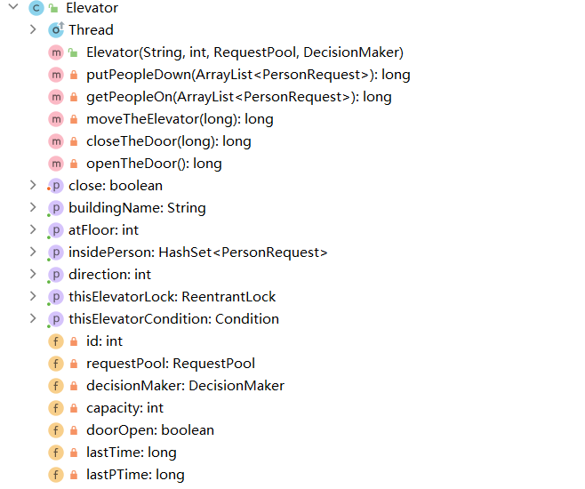

面向对象设计与构造第二单元第一次作业
多线程实时电梯系统
题目
分析
在本单元我们的任务为设计并实现一个多线程电梯，并且构造策略实现接送乘客于出发地和目的地
本单元为多线程的应用，对每一个有可能线程不安全的变量或者方法，都要通过加锁构造为
线程安全
使用
生产者-消费者模式，与乘客-电梯相对应
使用
策略类—电梯类分离模式，让电梯的运行与策略分离，并且电梯作为线程类，在其自身的run方法中保证输出的正确性
应用工厂模式，电梯捎带策略类均实现
DecisionMaker接口，以实现在策略之间的转换
基本思路
输入：乘客输入经过
InputThread类进入请求池，由于请求进入请求池的前后顺序无要求，并且请求之间互不影响，因此此过程并不会产生线程安全问题
输出：电梯或乘客在执行动作的时候需要调用
OutputThread类的一个 静态的 加锁的 方法来输出，因为官方所给的输出包是线程不安全的，在同时调用的时候会由于线程的冲突而导致输出时间戳有可能不递增，所以需要在此类把官方输出方法加锁使其线程安全
控制器：本程序的控制器起到开始时的建立请求池实例，建立所有电梯线程实例并开始线程，结束时的通知程序中止作用（并不起调度作用），相当于使程序开始和结束的控制者
策略：接受当前电梯的状态和请求池中的请求，然后对电梯返回一种 策略 （注意可能并不会真正执行），由于对每个电梯都有一个专门的策略类实例，所以这种一对一传输并不会产生线程安全问题
（LOOK算法）其思想如下：
如果电梯没人
如果没请求，则等待
如果有请求，沿原方向前进（原来是等待则沿另一个方向前进）
如果电梯有人
判断当前是否需要开门
如果不用开门，则沿原方向前进
虽然不知道原理是啥，但是学长都是这么用的（逃）
请求池操作：该类相当于
生产者-消费者模型中的托盘，由于该对象被多线程同时访问 / 修改，所以该类中的所有 修改请求池 的方法均应该加上同一个锁，以此来保证线程安全
电梯：每一个电梯都是一个单独的线程，电梯之间互不干扰，电梯的行动完全由其对应的策略类决定，并且在其
run()方法中保证电梯的正确性，并且加入了回退机制以实现"电梯空等后接第一个人时可以实现一次跃迁节省一次电梯移动时间"以及"电梯的关门和移动未完成时，如果有新的客人请求可以直接让电梯受理"的功能
程序结束：在
InputThread类判断到输入截止之后，输入线程终止，并且将调用控制器的close()方法，进而调用请求池的close()方法，请求池将所有电梯的isClose置位，并且唤醒所有线程，然后电梯在载完请求池中该栋以及当前在电梯中的所有客人后break出while(true)循环，电梯线程终止，所有电梯线程终止后，程序正常结束
具体实现
总UML类图：
读入处理类
InputThread
- 该类主要目的为开始和结束官方包的输入线程，并将每一个输入请求传递到
Controller类中
- 该类主要目的为开始和结束官方包的输入线程，并将每一个输入请求传递到
输出处理类
OutputThread- 该类只有一个
synchronized的static方法，对官方给的线程不安全的输出进行封装，使其成为线程安全的方法（即调用时不会出现时间戳不递增的情况）
- 该类只有一个
多项式类
Controller
- 对于多项式的
+/-/*/**操作均在该类中使用公开函数实现，需要时根据运算符类型调用即可 - 重写
toString方法，对保存在该类的各单项式对指数项进行排列后输出
- 对于多项式的
因子类接口
RequestPool因子类接口
Elevator表达式（加减）接口
DecisionMaker

其中 OutputThread 类的建立是因为官方所给的时间输出类并不是线程安全的，不同线程同时访问会有概率导致乱序输出问题（时间戳不严格递增），所以
易错点：
- 死锁
- 轮询
- 超载
- 超时
- ……
by Tan